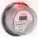
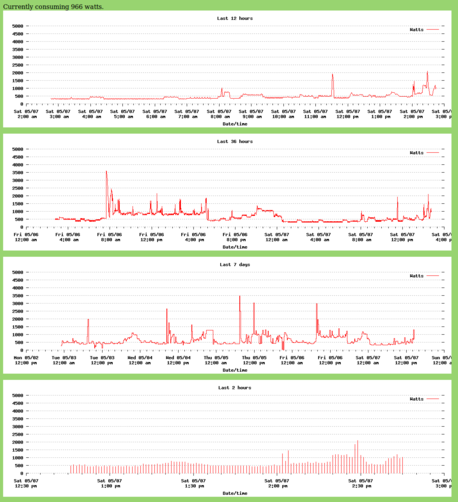

sigh - 2012-06-06
this page was reconstructed from backups of my original sourceforge-hosted Wordpress project blog. since sourceforge retired that service (without warning!!!!), this is all that's left. it was all much prettier before. i think i won't be hosting projects at sourceforge after this. ]
you can't change what you can't measure - 2011-04-28
i've wanted to be able to "see" our household electricity usage for a long time. i confess, we probably use a lot of it -- i have too many computers turned on in too many rooms, we heat the sun porch (which we use for at least an hour a day all year long) with electricity, and i'm a fan of a well-lit home. but in my own, small, misguided way, i'd like to conserve, and the only way to change one's behavior is to know that that behavior _is_ in the first place.
what i really want is a giant bar graph on the kitchen wall telling me what our current electricity consumption is. that's not going to happen right away, but i've started down that road -- i'm building a sensor that should give me the data, and i've cobbled together some web-accessible graphs that should show me the trends i'm interested in.
the sensor is based on something i discovered while surfing and googling, a while ago: many electric meters emit a brief infrared pulse every time you use a watt-hour of energy. if you're using 1000 watts, those pulses happen every couple of seconds.
"irmetermon" is my project to detect, log, and graph those pulses.
a picture is worth a 1000 watts - 2011-05-07
most of the effort in irmetermon went into physical construction, and the AVR firmware. but at least some went into making the graphs look nice. or, at least, presentable.
the regular bump every 2-1/4 hours is our (new) fridge. the old fridge had more frequent bumps, and they were twice as high. the spike at 11:30 saturday morning was the toaster. the larger spike at 7:55am on friday was the electric heat taking the chill off the sunporch. consumption was spiky friday afternoon, because we had a contractor installing windows -- occasionally sawing and drilling, and all the cellar lights were on as well. (some of the anomalies in the 7-day chart, like 0 power for a time, are from missing or bogus data during debugging.)
(in the image below, the labels aren't clear. here's a full-size image, in a new window.)
{kind=link}

we're working on trying to figure out what makes up the "base" usage of 400 or 500 watts. turns out it comes from several computers, the garage door opener (3W), the stereo receiver that's always on (25W), etc. i've now hooked the stereo up to an X10 controller, so it should be off more of the time. i also realized that the outside lighting we leave on overnight consumes almost 100 watts, even though it's on a dimmer, and is set pretty low. guess we need to do something about that.
build a monitor -- $20 or less - 2011-05-12
building a power meter like the one i've built is really pretty easy. if you've worked with microcontrollers, especially Atmel's AVR line of micros, before, it's especially easy. i also suspect the code could be ported in some form or other to an Arduino, which would let you use that whole family of tools as well.
but i'm not going to go the "gory details" route. the code includes a README and some installation notes that sketch the rough outlines, and i'll let you take it from there.
i do have some pictures that might help. the assembled detector
for the IR pulses that the electric meter is constantly putting
out looks like this:

the box
holds some minimal electronics (14 pin AVR micro, a resistor, a
capacitor, and a phototransistor), the piece of rubber shades the
meter, and the bungee cord holds it all together in a most
attractive way. okay, i was kidding about the last part.
inside, it looks like this:

it's
really pretty simple.
there are more pictures here.
the other end of the wire connects to a serial-to-USB converter. i used one from sparkfun, because it was easy to connect to. i don't have a picture of that, but it's an older version of this.
it all gets even easier (you can avoid much (but not all) of the soldering, and the need for the separate serial to USB converter, if you use a USB-capable AVR chip. i prototyped the detector using a breakout board from Adafruit Industries, which was a pleasure to use. (and how can you not like a product designed by a recent Wired cover story?)
similar power monitor projects - 2011-05-14
Obviously I'm not the first to do a project like irmetermon. In the hopes of making someone else's search easier, I thought I'd share links to the ones that I found earlier, as well as to the ones I only learned of from the hackaday.com comment page.
First up, the projects most similar to mine -- these all detect the infrared pulses from the IR LED in the meter.:
- This fellow's meter is outdoors, and the pipeworks he constructed to allow supporting the detector in front of the meter without actually attaching to the meter is a sight to behold. He also built a really great home-made analog gauge to use as an output device: http://andres-leon.blogspot.com/2010/02/measuring-my-electricity-consumption.html
- This project appears to be installed indoors (at least, I assume so, since the detector is just taped to the meter!). He's done some nice-looking Windows UI, but I don't think he shares that code. http://www.avbrand.com/projects/powermonitor/
- The next one is nice in that it makes use of the PPS (pulse-per-second) facility in modern kernels. PPS is normally used to synchronize to high-accuracy timebases (mostly GPS devices), but I guess it can be used to get accurate timings on any sort of pulses. Slick. http://phk.freebsd.dk/Eldims/
- Here's a nice implementation, using IR phototransistors salvaged from an old mouse, and wired in parallel: http://blog.docstech.net/2010/09/13/electricity-consumption-monitor-a-step-forward/
- I just got a comment today (on a previous post) from someone in the Netherlands who implemented irmetermon using the "break detect" scheme. Their meter is indoors, so it works fine for them. I'm thrilled that I've prompted and helped someone else start watching (and therefore, almost certainly reducing) their power consumption.
And let's not forget the folks that don't have flashing LEDs on their meters, but still have spinning disks. You can monitor those too, but it's trickier. I only found one project that attempts to do that:
Then there are projects that don't use the infrared LED, but instead measure current into the house with "current clamp" probes. By their nature, these projects require a little more care and respect for the high voltages and currents present in a household breaker box. Advantage are that they work from inside the house without access to the meter, and the readings are more immediate -- no waiting for a pulse, in order to do timing. (If your house is only consuming 350 watts, the IR pulses are 10 seconds apart, so there's some delay before you'll observe a change.)
- This one uses just two probes (one for each incoming phase): http://hackaday.com/2010/12/21/clamp-sensor-power-monitoring/
- And another: http://www.picobay.com/projects/2009/01/real-time-web-based-power-charting.html
- Ed Cheung's system uses homemade current probes. Knowing Ed's other projects, this doesn't surprise me. http://www.edcheung.com/automa/power.htm
- Here's a link to someone's really complete monitoring setup -- they have a current probe on every circuit in their house. Overkill for my needs, but I understand the compulsion. http://www.kondra.com/circuit/circuit.html
And then of course there are the commercial offerings. There are lots of these. You pay for packaging, convenience, hopefully slick UI features, etc. If you go this route, be sure you can get access to your data. With the Radio Shack product, for instance (EM100B), you won't pay much (under $30 at amazon) but you don't get access to the data other than through the provided display -- no computer interface, no graphs.
One company deserves special mention (and not only because they self-promoted themselves in the hackaday comments -- grrr.). They seem to be selling something that does exactly what irmetermon and the rest of the inexpensive products listed above do, and in the same way, but for $250. And on top of that they seem to take your data and then charge you $9 a month to view it. Not my kind of product, I'm afraid. Compare that to another popular product that simply makes all the data available in XML format, and gives you an interface to Google powermeter along with it.
Oh -- speaking of Google's powermeter -- here's a set of instructions for how to hook your home-brew metering up to Google's monitoring API. I haven't done this (and probably won't) but I thought it was interesting. (Complicated, but interesting.) http://mosquitto.org/2010/06/google-powermeter-step-by-step/